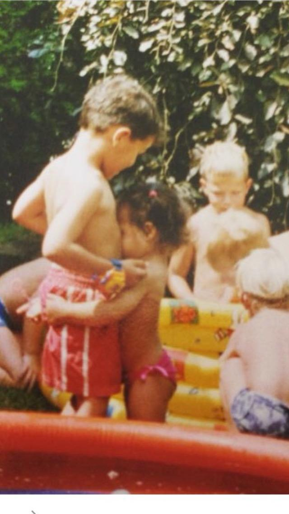
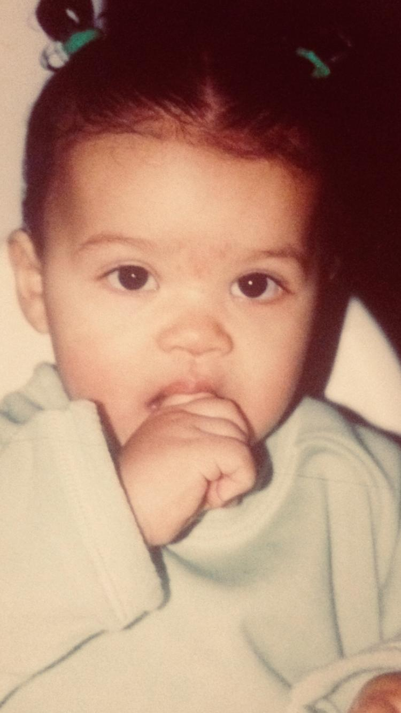
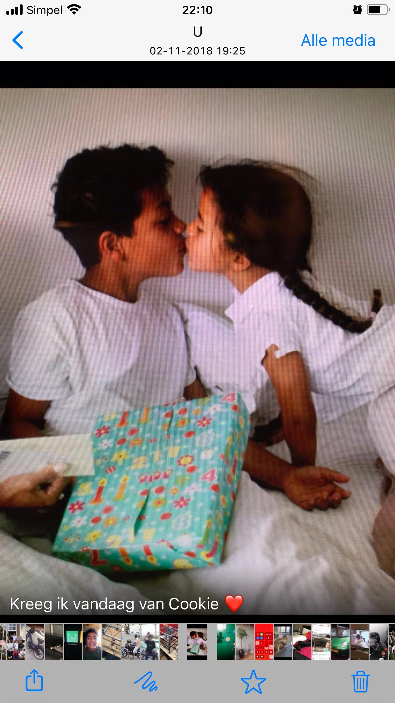
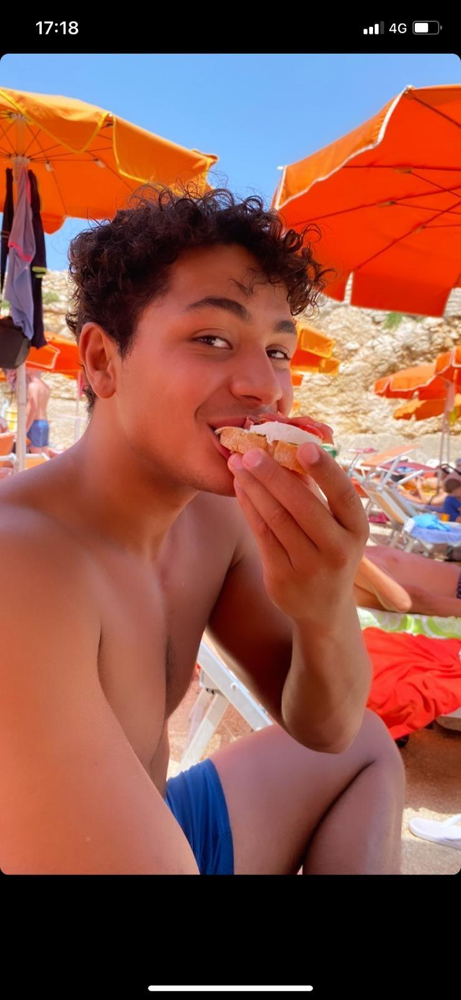
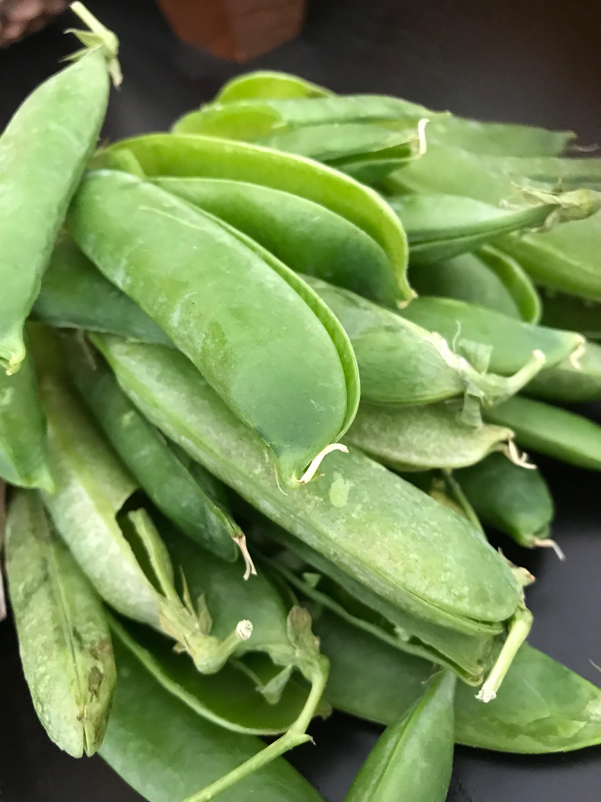
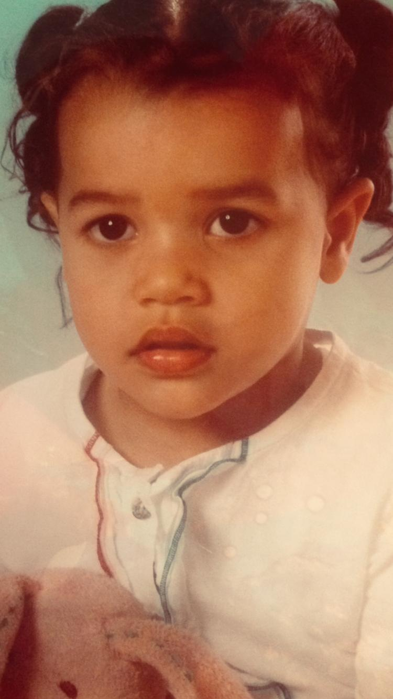
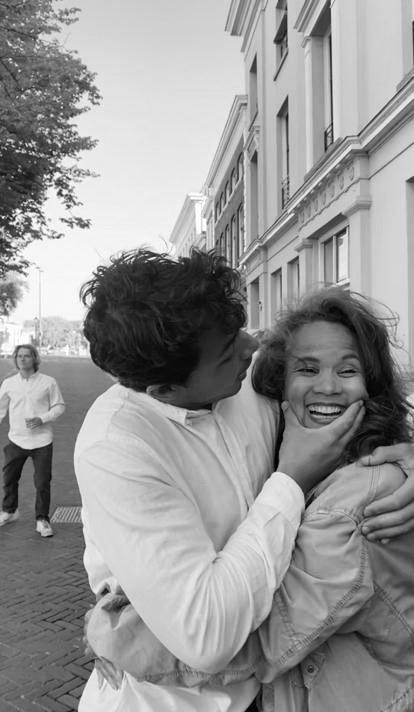

De Wensen
van de
Kabouters
een kookboek vol liefde & herinneringen
met liefde gemaakt door mama
Lieve Kabouters
Dit boekje is voor jullie, mijn allerliefste kabouters.
Toen jullie nog klein waren en met je mollige handjes aan mijn schort trokken terwijl ik in de keuken stond, wist ik al: deze momenten zijn de mooiste kruiden van het leven.
Elk gerecht draagt een herinnering. De geur van roti op zondagochtend. De chaos als jullie "hielpen" met de bojo. Het stiekem proeven van de pom.
Dit zijn de smaken van ons thuis, van onze liefde, van ons Suriname in Amsterdam.
Kook ze, proef ze, en denk aan mama.
1

2
recept één
Roti met
Kip Masala
Kip Masala
Elke zondag stond mama al om zeven uur in de keuken. De geur van masala kroop onder de slaapkamerdeur door en dat was ons wekker. Wie het eerst beneden was, mocht het eerste stukje roti scheuren — nog warm en dampend.
Ingrediënten
- 500g bloem
- 200ml water
- 4 el olie
- 1 tl bakpoeder
- 600g kippendijen
- 3 aardappelen
- 2 el masala poeder
- 1 ui, gesnipperd
- 3 teentjes knoflook
- 1 Madame Jeanette
- Zout naar smaak
- Scheutje ketjap
Bereiding
- Meng bloem, bakpoeder, zout en olie. Voeg langzaam water toe en kneed tot soepel deeg. Laat 30 min rusten.
- Marineer de kip met masala, knoflook, zout en ketjap. Minimaal 1 uur.
- Fruit de ui, voeg kip toe en bak aan. Voeg water toe en laat sudderen.
- Voeg aardappelblokjes toe en laat 25 min zachtjes koken.
- Rol deeg uit, bestrijk met olie, vouw op, rol opnieuw. Bak in droge pan met boter.


recept twee
Pom
Pom was altijd het teken dat er iets te vieren was. Verjaardagen, Kerst, of gewoon omdat mama ons blij wilde maken. We stonden met z'n allen om het aanrecht — de een raspte de pomtajer, de ander scheurde de kip. Samen koken, samen feesten.
Ingrediënten
- 1kg pomtajer
- 500g kippendijen
- 3 tomaten
- 2 uien
- 3 el tomatenpuree
- 2 sinaasappels (sap)
- 1 citroen (sap)
- Nootmuskaat
- Zout & peper
- 3 el boter
- 1 bouillonblokje
- Madame Jeanette
Bereiding
- Kook de kip gaar met ui, tomaat en kruiden. Bewaar het kookvocht. Scheur het vlees.
- Schil de pomtajer en rasp fijn. Meng direct met citroensap.
- Meng geraspte pomtajer met sinaasappelsap, nootmuskaat, tomatenpuree, zout en peper.
- Vet ovenschaal in. Helft pomtajer, dan kip, dan de rest. Kookvocht erover, boter bovenop.
- Bak 1,5 uur op 180°C tot goudbruin en knapperig.


recept drie
Bojo
Bojo was mama's geheime wapen. Huilde er iemand? Bojo. Goed rapport? Bojo. Gewoon een regenachtige woensdag? Bojo. Die zoete, kleverige cake loste alles op. En ja, jullie likten altijd de kom uit — maar ik zag het wel, hoor.
Ingrediënten
- 500g geraspte cassave
- 200g geraspte kokos
- 400ml kokosmelk
- 200g suiker
- 100g boter (gesmolten)
- 3 eieren
- 1 tl vanille extract
- ½ tl kaneel
- ½ tl nootmuskaat
- Snufje zout
- 100g rozijnen
Bereiding
- Verwarm de oven op 180°C. Vet een cakevorm in met boter.
- Meng cassave, kokos, suiker, kaneel en nootmuskaat in een grote kom.
- Klop eieren los, meng met kokosmelk, gesmolten boter en vanille.
- Voeg nat bij droog, roer goed door. Voeg rozijnen toe.
- Giet in de vorm. Bak 60-75 min tot goudbruin. Laat afkoelen!


recept vier
Moksi Alesi
Moksi alesi is het ultieme alles-in-één-pot gerecht. Op drukke schooldagen, als jullie met hongerige oogjes thuiskwamen en niet konden wachten, was dit het antwoord. Eén pot, honderd smaken, altijd schone bordjes.
Ingrediënten
- 400g rijst
- 200g bruine bonen
- 250g gerookte kip
- 200g garnalen
- 200ml kokosmelk
- 2 tomaten
- 1 groene peper
- 2 uien
- 3 teentjes knoflook
- 2 el tomatenpuree
- Zout & peper
- Selderij & bieslook
Bereiding
- Was de rijst goed en laat uitlekken.
- Fruit ui en knoflook. Voeg tomatenpuree en tomaten toe.
- Voeg gerookte kip en garnalen toe, bak kort mee.
- Voeg rijst, bonen, kokosmelk en water toe. Breng aan de kook.
- Vuur laag, dek af, stoom 25 min. Roer met vork. Garneer met selderij.


10
recept vijf
Saoto Soep
Als het buiten koud en grijs was in Amsterdam, was saoto onze zonneschijn in een kom. Met alle toppings op tafel was het een feestje — iedereen maakte zijn eigen bordje. En ja, jullie deden altijd véél te veel taugé. Maar dat mocht.
Ingrediënten
- 1 hele kip
- 2L water
- 4 teentjes knoflook
- 1 stuk gember (5cm)
- 2 stengels sereh
- 3 salam blaadjes
- 1 el koenjit poeder
- Selderij & bieslook
- Zout & peper
- Taugé, gebakken uitjes
- Rijst & ei (topping)
- Ketjap & sambal
Bereiding
- Kook de kip in ruim water met knoflook, gember, sereh en salam. Schep schuim af.
- Laat 45 min trekken. Haal kip eruit en scheur het vlees.
- Zeef de bouillon. Voeg koenjit, zout en peper toe.
- Voeg kipvlees terug en laat 10 min trekken.
- Serveer met rijst, taugé, ei, gebakken uitjes en ketjap.


recept zes
Bakbana met
Pindakaas
Pindakaas
Dit was jullie allereerste snack. Nog voordat jullie 'mama' konden zeggen, wezen jullie al naar de bananenbos. De geur van bakbana in hete olie, met warme pindakaas erover... zelfs nu nog, als jullie thuiskomen, is dit het eerste wat ik maak.
Ingrediënten
- 4 rijpe bakbananen
- Olie om te bakken
- Snufje zout
- 200g ongezouten pinda's
- 2 teentjes knoflook
- 1 Madame Jeanette
- 1 tomaat
- 1 ui
- 200ml water
- Zout naar smaak
- 1 el suiker
Bereiding
- Rooster pinda's in droge pan. Maal fijn in blender.
- Fruit ui en knoflook. Voeg tomaat en peper toe.
- Voeg gemalen pinda's en water toe. 15 min pruttelen met zout en suiker.
- Schil bakbananen, snijd schuin in plakken van 1cm.
- Bak goudbruin in hete olie. Serveer warm met pindakaas. Eet smakelijk!

Koken is liefde
die je kunt proeven.
Familie is het
geheime ingrediënt.
En kabouters?
Die wensen altijd
om nog een bordje.
— met alle liefde, voor altijd —
15
De Wensen van de Kabouters
een kookboek vol liefde,
herinneringen &
Surinaamse smaken